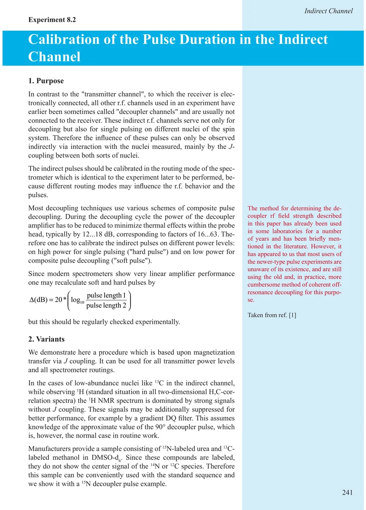
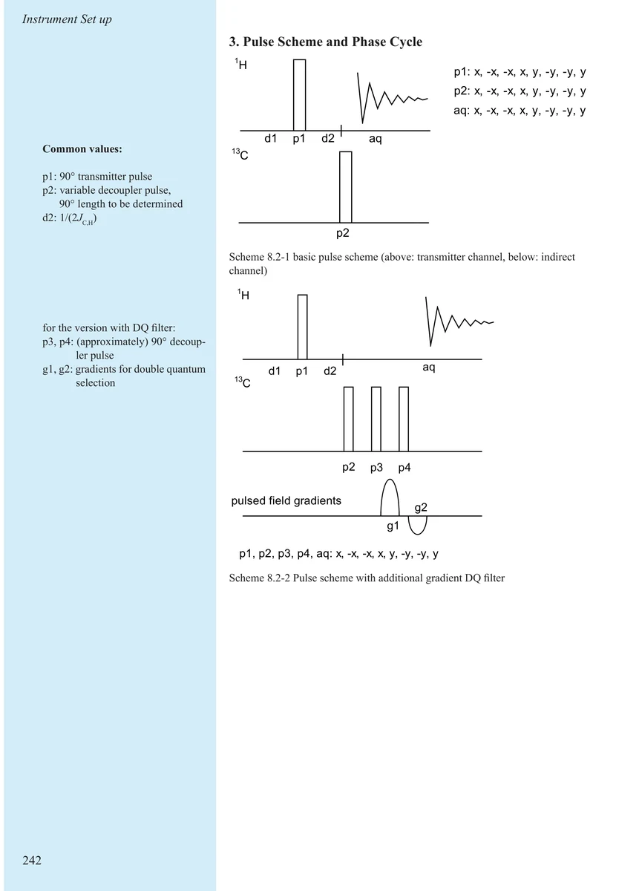
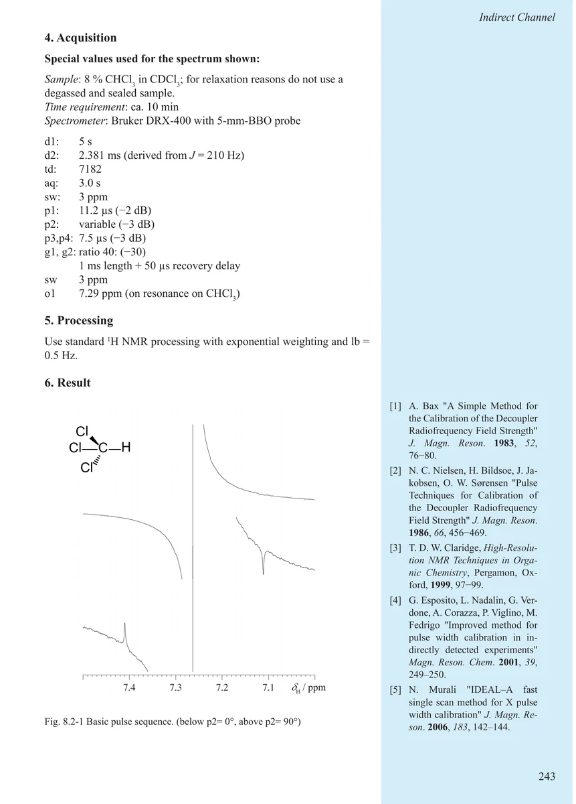
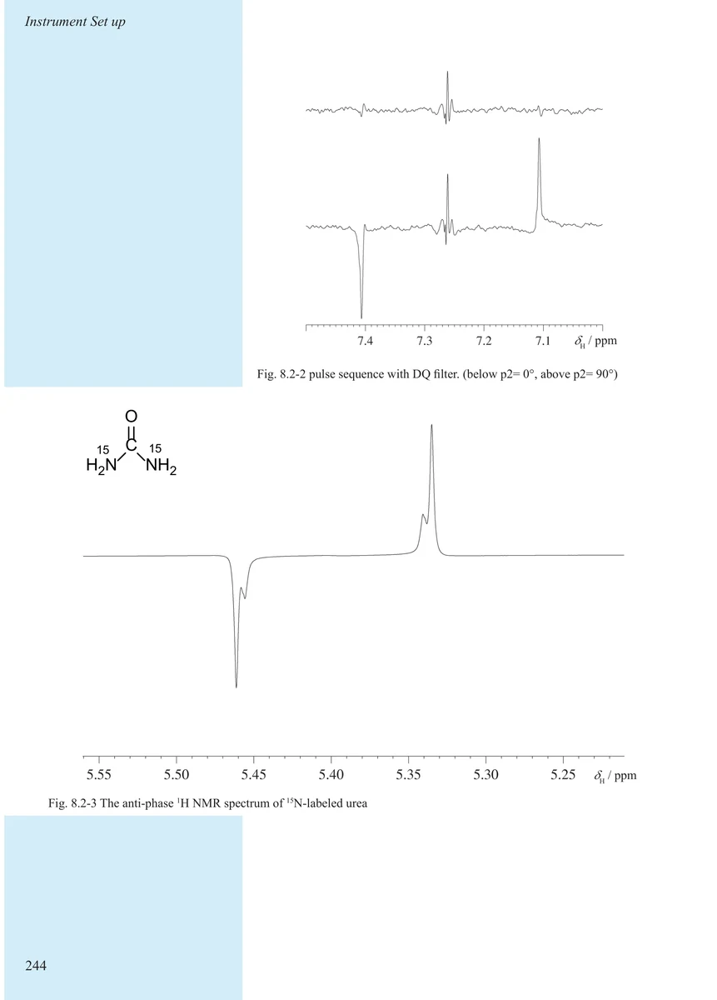
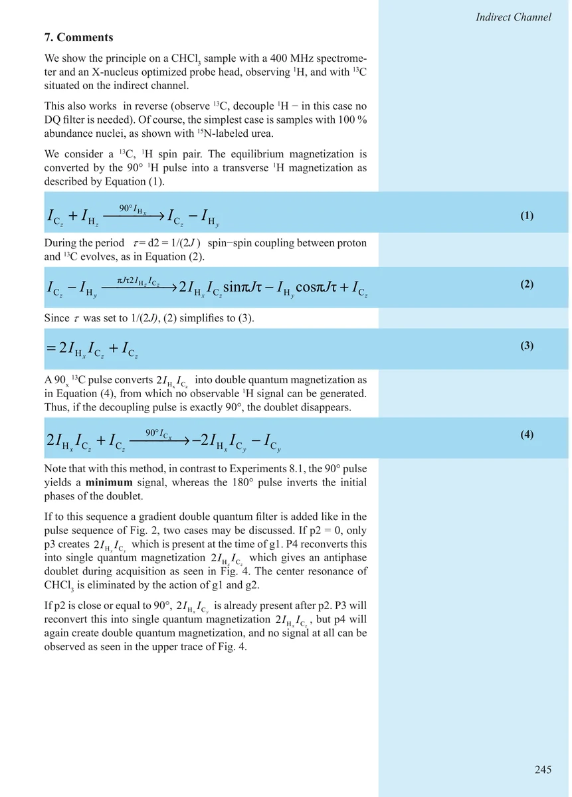
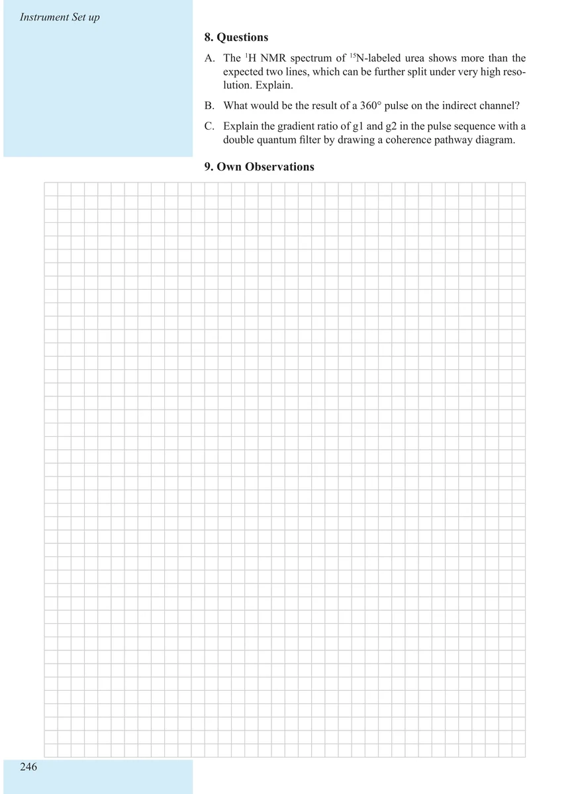

Item 8.2
Calibration of the Pulse Duration in the Indirect Channel
间接通道脉冲宽度校准
PDF 251–256 · 原书 241–246 · Maintenance and Calibration






核磁共振实验方法、脉冲序列与谱图实践
Item 8.2
间接通道脉冲宽度校准
PDF 251–256 · 原书 241–246 · Maintenance and Calibration





